Inheritance
A Critical View On Inheritance
Inheritance is the main built-in variability mechanism of OO languages.
Common functionality can be implemented by a base class and each variation can be implemented by a separate subclass.
- In the following, we analyze the strengths and deficiencies of inheritance with respect to supporting variability.
- Many design patterns that we will discuss in the following sections propose solutions to compensate for deficiencies of inheritance.
- This section serves as a bridge between the block on design principles and the blocks about design patterns and advanced languages.
Desired Properties Of Inheritance
Desired Properties
Built-in support for OCP.
Good Modularity.
Support for structural variations.
Variations can be represented in type declarations.
A good support for OCP, reduces the need to anticipate variations. Inheritance allows replacing the implementation of arbitrary methods of a base class (unless it is explicitly forbidden, e.g., in Java methods can be declared as final).
Of course, support for variability in a class is conditioned by the granularity of its methods and the abstractions built-in.
When we achieve good modularity, the base class can remain free of any variation-specific functionality; each variation is implemented in a separate subclass.
In general, inheritance allows to design the most suitable interface for each variation.
Different variations of a type may need to extend the base interface with variation-specific fields and methods. (In addition to varying the implementation of the inherited base interface.)
The property that variations can be represented in type declarations is necessary for type-safe access of variation-specific interfaces.
Desired Properties By Example
Variation of selection functionality of table widgets.
class TableBase extends Widget {
TableModel model;
String getCellText(int row, int col){return model.getCellText(row, col);}
void paintCell(int r, int c){getCellText(row, col) … }
}
abstract class TableSel extends TableBase {
abstract boolean isSelected(int row, int col);
void paintCell(int row, int col) { if (isSelected(row, col)) … }
}
class TableSingleCellSel extends TableSel {
int currRow; int currCol;
void selectCell(int r, int c){currRow = r; currCol = c;}
boolean isSelected(int r, int c){return r == currRow && c == currCol;}
}
class TableSingleRowSel extends TableSel {
int currRow;
void selectRow(int row) { currRow = row; }
boolean isSelected(int r, int c) { return r == currRow;}
}
class TableRowRangeSel extends TableSel { … }
class TableCellRangeSel extends TableSel { … }
The modularization of these variations by inheritance is illustrated by the given (pseudo-)code:
- TableBase implements basic functionality of tables as a variation of common functionality for all widgets, e.g., display of tabular data models.
- The abstract class
TableSel extends TableBase with functionality that is common for all types of table selection, e.g., rendering of selected cells.
TableSingleCellSel, TableSingleRowSel, TableRowRangeSel, and TableCellRangeSel implement specific types of table selections.
Assessment
Built-in support for OCP:
The implementation of paintCell in TableSel can be overridden.
Good modularity:
Each table selection model is encapsulated in a separate class.
Support for structural variations:
- Different operations and variables are declared and implemented by
TableSingleCellSel and TableSingleRowSel: currRow, currCel, selectCell and currRow, selectRow, respectively.
- Can design the most suitable interface for each type of table selection.
- Do not need to design a base interface that fits all future variations.
Variations can be represented in type declarations:
Deficiencies of Inheritance
Non-Reusable, Hard-to-Compose Extensions
Non-Reusable, Hard-to-Compose Extensions
An Extract from Java’s Stream Hierarchy
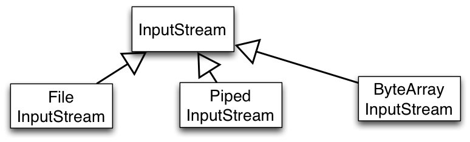
Consider an extract from java.io package that consists of classes for reading from a source. Streams abstract from concrete data sources and sinks:
InputStream is root of stream classes reading from a data source.FileInputStream implements streams that read from a file.PipedInputStream implements streams that read from a PipedOutputStream.
Typically, a thread reads from a PipedInputStream data written to the corresponding PipedOutputStream by another thread.ByteArrayInputStream implements streams that read from memory.
Non-Reusable, Hard-to-Compose Extensions
An Extract from Java’s Stream Hierarchy -- A Simple Variation
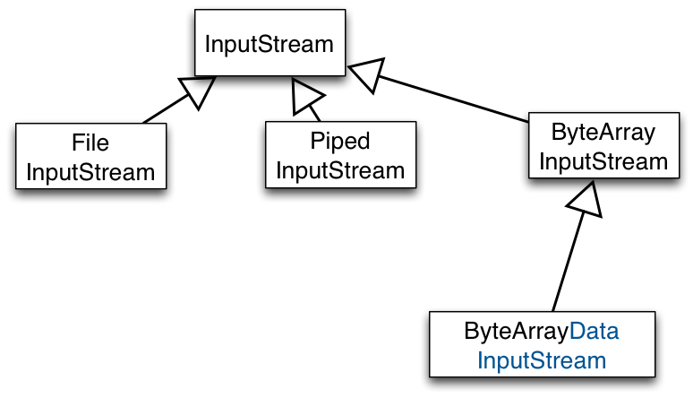
Need a variation of ByteArrayInputStream capable of reading whole sentences and not just single bytes.
We could implement it as a subclass of ByteArrayInputStream. The blue part in the name of the class denotes the delta (DataInputStream) needed to implement this variation.
Further Variations that are conceivable:
Non-Reusable, Hard-to-Compose Extensions
An Extract from Java’s Stream Hierarchy -- A Simple Variation
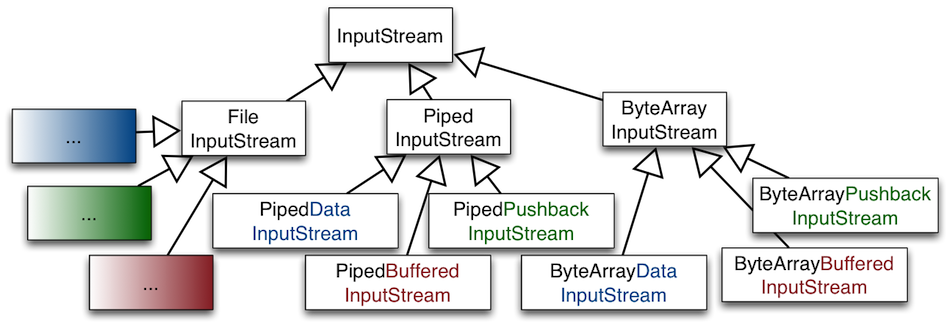
Each kind of variation would have to be re-implemented
for all kinds of streams,
for all meaningful combinations of variations
Assessment: The design is complex and suffers from a huge amount of code duplication.
Non-Reusable, Hard-to-Compose Extensions
Extensions defined in subclasses of a base class cannot be reused with other base classes.
Result:
- Code duplication
- Maintenance nightmare
A particular type of variation needs to be re-implemented for all siblings of a base type which results in code duplication.
Large number of independent extensions are possible:
- For every new functionality we want.
- For every combination of every functionality we want.
Maintenance nightmare: exponential growth of number of classes.
Weak Support for Dynamic Variability
Weak Support for Dynamic Variability
Variations supported by an object are fixed at object creation time and cannot be (re-)configured dynamically.
Dynamic Variability Illustrated (I)
The configuration of an object’s implementation may depend on values from the runtime context.
Potential Solution:
Mapping from runtime values to classes to be instantiated can be implemented by conditional statements.
Issue:
Such a mapping is error-prone and not extensible.
When new variants of the class are introduced, the mapping from configuration variables to classes to instantiate must be changed.
Example:
Table widget options may come from some dynamic configuration panel; depending on the configuration options, different compositions of table widget features need to be instantiated.
Dynamic Variability Illustrated (II)
The behavior of an object may vary depending on its state or context of use.
Potential Solution:
Mapping from runtime values to object behavior can be implemented by conditional statements in the implementation of object’s methods.
Issue:
Such a mapping is error-prone and not extensible.
When new variants of the behavior are introduced, the mapping from dynamic variables to implementations must be changed.
Example:
An account object’s behavior may vary depending on the amount of money available. The behavior of a service then may need to vary depending on the client’s capabilities.
The Fragile Base Class Problem
Cf. Item 17 of Joshua Bloch's, Effective Java.
The Fragile Base Class Problem Illustrated
The Fragile Base Class Problem Illustrated
An Instrumented HashSet
import java.util.*;
public class InstrumentedHashSet<E> extends HashSet<E> {
private int addCount = 0;
public InstrumentedHashSet() { }
public InstrumentedHashSet(int initCap, float loadFactor) {
super(initCap, loadFactor);
}
@Override public boolean add(E e) { addCount++; return super.add(e); }
@Override public boolean addAll(Collection<? extends E> c) {
addCount += c.size();
return super.addAll(c);
}
public int getAddCount() { return addCount; }
public static void main(String[] args) {
InstrumentedHashSet<String> s = new InstrumentedHashSet<String>();
s.addAll(Arrays.asList("aaa", "bbb", "ccc"));
System.out.println(s.getAddCount());
}
}
Suppose we want to implement HashSets that know the number of their elements.
We implement a class InstrumentedHashSet that inherits from HashSet and overrides methods that change the state of a HashSet …
The answer to the question is 6 because the implementation of addAll in HashSet internally calls this.add(...). Hence, added elements are counted twice.
The Fragile Base Class Problem Illustrated
An Instrumented HashSet
import java.util.*;
public class InstrumentedHashSet<E> extends HashSet<E> {
private int addCount = 0;
public InstrumentedHashSet() { }
public InstrumentedHashSet(int initCap, float loadFactor) {
super(initCap, loadFactor);
}
@Override public boolean add(E e) { addCount++; return super.add(e); }
// @Override public boolean addAll(Collection<? extends E> c) {
// addCount += c.size();
// return super.addAll(c);
// }
public int getAddCount() { return addCount; }
public static void main(String[] args) {
InstrumentedHashSet<String> s = new InstrumentedHashSet<String>();
s.addAll(Arrays.asList(“aaa", “bbb", “ccc"));
System.out.println(s.getAddCount());
}
}
For the moment yes. But, not principally.
What if in the future the designers of HashSet decide to re-implement addAll to insert the elements of the parameter collection as a block rather than by calling add on each element of the collection? Might be necessary for efficiency reasons.
The Fragile Base Class Problem in a Nutshell
The Fragile Base Class Problem in a Nutshell
Changes in base classes may lead to unforeseen problems in subclasses.
“Inheritance Breaks Encapsulation”
You can modify a base class in a seemingly safe way. But this modification, when inherited by the derived classes, might cause them to malfunction.
You can't tell whether a base class change is safe simply by examining the base class' methods in isolation. You must look at (and test) all derived classes as well.
You must check all code that uses the base class and its derived classes; this code might also be broken by the changed behavior.
A simple change to a key base class can render an entire program inoperable.
The Fragile Base Class Problem in a Nutshell
Fragility by dependencies on the self-call structure
- The fragility considered so far is caused by dependencies on the self-call structure of the base class.
- Subclasses make assumptions about the calling relationship between
public and protected methods of the base class.
- These assumptions are implicitly encoded in the overriding decisions of the subclass.
- If these assumptions are wrong or violated by future changes of the structure of superclass’ self-calls, the subclass’s behavior is broken.
The Fragile Base Class Problem in a Nutshell
Fragility by addition of new methods.
Another kind of fragility is caused by extensions of the base class with new methods that were not there when the class was subclassed.
Example:
- Consider a base collection class.
- To ensure some (e.g., security) property, we want to enforce that all elements added to the collection satisfy a certain predicate.
- We override every method that is relevant for ensuring the security property to consistently check the predicate.
- Yet, the security may be defeated unintentionally if a new method is added to the base class which is relevant for the (e.g., security) property.
Several holes of this nature had to be fixed when Hashtable and Vector were retrofitted to participate in the Java Collection Frameworks.
The Fragile Base Class Problem in a Nutshell
Fragility by addition of new methods.
Accidental method capture: A new release of the base class accidentally includes a method with the same name.
Your code does not compile because the new method in the base class has the same signature but a different return type.
Your methods get involved in things you never thought about because the added method has the same signature and return type.
Taming Inheritance
Taming Inheritance
Implementation inheritance (extends) is a powerful way to achieve code reuse.
But, if used inappropriately, it leads to fragile software.
Next, we discuss rules of thumb for making "good use" of inheritance.
Dos and Don'ts
It is always safe to use inheritance within a package.
The subclass and the superclass implementation are under the control of the same programmers.
It is also OK to extend classes specifically designed and documented for extension.
Avoid inheriting from concrete classes not designed and documented for inheritance across package boundaries.
Design and document for inheritance or else prohibit it.
Joshua Bloch, Effective Java
Classes Must Document Self-Use
Common Conventions for Documenting Self-Use
The description of self-invocations to overridable methods is given at the end of a method’s documentation comment.
The description starts with “This implementation …”.
Indicates that the description tells something about the internal working of the method.
Overridable method = non-final and either public or protected
Example of Documentation On Self-Invocation
Taken from: java.util.AbstractCollection
public boolean remove(Object o)
Removes a single instance of the specified element from this collection.
…
This implementation removes the element from the collection using the iterator's remove method.
Note that this implementation throws an UnsupportedOperationException if the iterator returned by this collection's iterator() method does not implement the remove(…) method.
The documentation makes explicit that overriding iterator() will affect the behavior of remove and what the effect would be.
Documenting Self-Use In API Documentation
Do implementation details have a rightful place in a good API documentation?
The answer is simple: It depends!
Current documentation techniques and tools lack proper means of separating the two kinds of API documentations.
Provide And Document Hooks To Internals
Example taken from: java.util.AbstractList
protected void removeRange(int fromIndex, int toIndex)
Removes from a list …
This method is called by the clear operation on this list and its sub lists. Overriding this method to take advantage of the internals of the list implementation can substantially improve the performance of the clear operation on this list and its sub lists…
This implementation gets a list iterator positioned before fromIndex and repeatedly calls ListIterator.next and ListIterator.remove. Note: If ListIterator.remove requires linear time, this implementation requires quadratic time.
A class must document the supported hooks to its internals. These internals are irrelevant for ordinary users of the class. But, they are crucial for enabling subclasses to specialize the functionality in an effective way.
Carefully Design and Test Hooks To Internals
- Provide as few protected methods and fields as possible
- Each of them represents a commitment to an implementation detail.
- Designing a class for inheritance places limitations on the class.
- Do not provide too few hooks.
A missing protected method can render a class practically unusable for inheritance.
W.r.t. designing the internal hooks and making decisions about the kind and number of internal hooks, no silver bullet exists. You have to think hard, take your best guess, and test.
Test your class for extensibility before releasing them. By writing test subclasses (At least one subclass should be written by someone other than the superclass author).
Constructors Must Not Invoke Overridable Methods
Constructors Must Not Invoke Overridable Methods
Java Example
class JavaSuper {
public JavaSuper() { printState(); }
public void printState() { System.out.println("no state"); }
}
class JavaSub extends JavaSuper {
private int x = 42; // the result of a tough computation
public void printState() { System.out.println("x = " + x); }
}
class JavaDemo {
public static void main(String[] args) {
JavaSuper s = new JavaSub();
s.printState();
}
}
The result is (The complete code.):
x = 0
x = 42
Problem:
An overridable method called by a constructor may get invoked on a non-initialized receiver.
As a result a failure may occur.
Reason:
- The superclass constructor runs before the subclass constructor.
- The overridden method will get invoked before the subclass constructor has been invoked.
- The overridden method will not behave as expected if it depends on any initialization done by the subclass constructor.
Constructors Must Not Invoke Overridable Methods
Scala Example (One-to-one translation of the Java code)
Not idiomatic Scala code!
class ScalaSuper {
// executed at the end of the initialization
printState();
def printState() {
println("no state")
}
}
class ScalaSub extends ScalaSuper {
var y: Int = 42 // What was the question?
override def printState() { println("y = "+y) }
}
object ScalaDemo extends App {
val s = new ScalaSub
s.printState() // after initialization
}
The complete code: SuperSubNonIdiomatic.scala.
For further details: Scala Language Specification
Constructors Must Not Invoke Overridable Methods
Scala Example (Refined using an early field definition clause.)
Idiomatic Scala code!
An early field definition clause
is used to define the field value
before the supertype
constructor is called.
class Super {
// executed at the end of the initialization
printState();
def printState() {
println("no state")
}
}
class Sub(var y: Int = 42) extends Super {
override def printState() {
println("y = "+y)
}
}
object Demo extends App {
val s = new Sub
s.printState() // after initialization
}
The complete code: SuperSub.scala.
For further details: Scala Language Specification (5.1.6 Early Definitions)
Recommended reading: How Scala Experience Improved Our Java Development
Variations At The Level Of Multiple Objects
Variations at the Level of Multiple Objects
So far:
We considered variations, whose scope are individual classes.
But, no class is an island!
Examples of class groupings:
- data structures such as trees and graphs,
- sophisticated frameworks,
- the entire application.
Classes in a group may be related in different ways:
- by references to each other,
- by signatures of methods and fields,
- by instantiation,
- by inheritance,
- by shared state and dependencies.
Illustrative Example: Window Menus
Illustrative Example: Window Menus
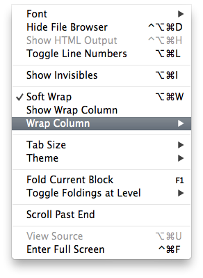
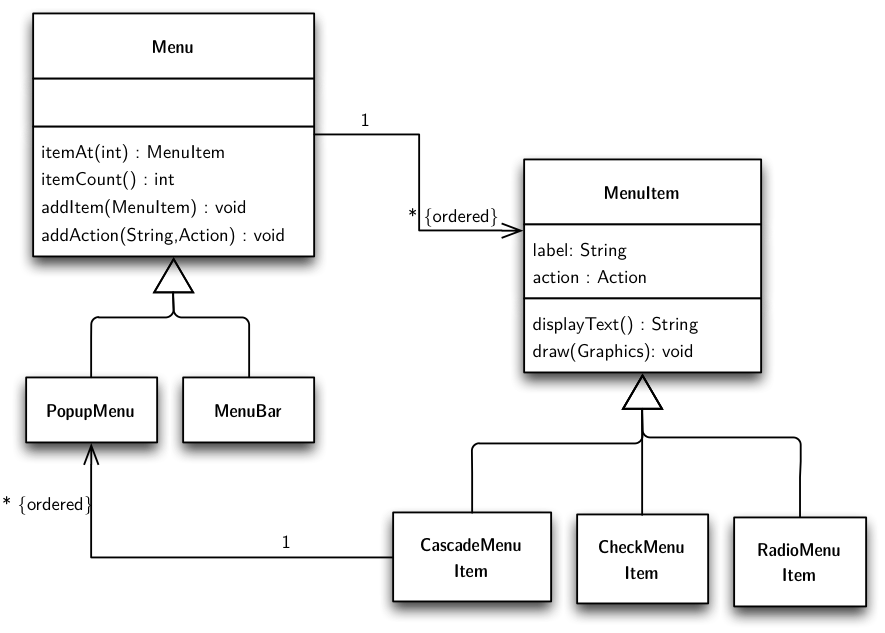
For illustration, we will consider variations of menu structures:
- A menu is a GUI component consisting of a list of menu items corresponding to different application-specific actions.
- Menus are usually organized hierarchically: a menu has several menu items.
- There may be different variants of menus (popup, menu bar).
- There may be different variants of menu items.
- A menu item can be associated with a cascade menu which pops up when the item is selected.
Menu and menu item objects are implemented by multiple classes that are organized in inheritance hierarchies to represent variations of the elements of the object structure.
Different Kinds of Menus
abstract class Menu {
List<MenuItem> items;
MenuItem itemAt(int i) {
return items.get(i);
}
int itemCount() { return items.size(); }
void addItem(MenuItem item) { items.add(item); }
void addAction(String label, Action action) {
items.add(new MenuItem(label, action));
}
...
}
class PopupMenu extends Menu { ... }
class MenuBar extends Menu { ... }
Classes involved in the implementation of menu functionality refer to each other in the declarations and implementations of their fields and methods.
Different Kinds of Menu Items
class MenuItem {
String label;
Action action;
MenuItem(String label, Action action) {
this.label = label;
this.action = action;
}
String displayText() { return label; }
void draw(Graphics g) { … displayText() … }
}
class CascadeMenuItem extends MenuItem {
PopupMenu menu;
void addItem(MenuItem item) { menu.addItem(item); }
…
}
class CheckMenuItem extends MenuItem { … }
class RadioMenuItem extends MenuItem { … }
Inheritance for Optional Features of Menus
- Variations of menu functionality affect multiple objects constituting the menu structure.
- Since these objects are implemented by different classes, we need several new subclasses to express variations of menu functionality.
- This technique has several problems, which will be illustrated in the following by a particular example variation: Adding accelerator keys to menus.
Various optional features related to functionality of menus:
- Support for accelerator keys for a quick selection of a menu item using a specific key stroke,
- Support for multi-lingual text in menu items,
- Support for context help,
Menu Items with Accelerator Keys
class MenuItemAccel extends MenuItem {
KeyStroke accelKey;
boolean processKey(KeyStroke ks) {
if (accelKey != null && accelKey.equals(ks)) {
performAction();
return true;
}
return false;
}
void setAccelerator(KeyStroke ks) { accelKey = ks; }
void draw(Graphics g) {
super.draw(g);
displayAccelKey();
}
…
}
The extension of menu items with accelerator keys is implemented in class MenuItemAccel, a subclass of MenuItem.
The extension affects both the implementation of existing methods as well as the structure and interface of menu items. E.g., the implementation of the draw method needs to be extended to display the accelerator key besides the label of the item.
New attributes and methods are introduced
- to store the key associated to the menu item,
- to change this association,
- to process an input key,
- to display the accelerator key
Menus with Accelerator Keys
abstract class MenuAccel extends Menu {
boolean processKey(KeyStroke ks) {
for (int i = 0; i < itemCount(); i++) {
if (((MenuItemAccel) itemAt(i)).processKey(ks)) return true;
}
return false;
}
void addAction(String label, Action action) {
items.add(new MenuItemAccel(label, action));
}
…
}
MenuAccel implements the extension of menus with accelerator keys:
- adds the new method
processKey for processing keys
- overrides method
addAction to ensure that the new item added for an action supports accelerator keys
Non-Explicit Covariant Dependencies
Non-Explicit Covariant Dependencies
Covariant dependencies between objects:
The varying functionality of an object in a group may need to access the corresponding varying functionality of another object of the group.
The type declarations in our design do not express covariant dependencies between the objects of a group.
References between objects are typed by invariant types, which provide a fixed interface.
Covariant dependencies are emulated by type-casts.
abstract class MenuAccel extends Menu {
boolean processKey(KeyStroke ks) {
for (int i = 0; i < itemCount(); i++) {
if (((MenuItemAccel) itemAt(i)).processKey(ks)) return true;
}
return false;
}
…
}
The method processKey in a menu with accelerator keys needs to call processKey on its items.
- Items of a menu are accessed by calling the method
itemAt.
- The method
itemAt is inherited from class Menu, where it was declared with return type MenuItem.
- Thus, to access the extended functionality of menu items, we must cast the result of
itemAt to MenuItemAccel.
The design cannot guarantee that such a type cast will always be successful, because items of MenuAccel are added over the inherited method addItem, which accepts all menu items, both with and without the accelerator functionality.
Potential for LSP violation!
Instantiation-Related Reusability Problems
Instantiation-Related Reusability Problems
Code that instantiates the classes of an object group cannot be reused with different variations of the group.
abstract class Menu {
void addAction(String label, Action action) {
items.add(new MenuItem( // <= Creates a MenuItem
label, action
));
}
…
}
abstract class MenuAccel extends Menu {
void addAction(String label, Action action) {
items.add(new MenuItemAccel( // <= Creates a MenuItemAccel
label, action
));
}
…
}
Instantiation code can be spread all over the application.
MenuItem is instantiated in Menu.addAction(...). - In
MenuAccel, we override addAction(...), so that it instantiates MenuItemAccel.
A menu of an application can be built from different reusable pieces, provided by different menu contributors.
Menu Contributor for Operations on Files
A menu of an application can be built from different reusable pieces, provided by different menu contributors.
interface MenuContributor {
void contribute(Menu menu);
}
class FileMenuContrib implements MenuContributor {
void contribute(Menu menu) {
CascadeMenuItem openWith = new CascadeMenuItem(”Open With”);
menu.addItem(openWith);
MenuItem openWithTE =
new MenuItem(”Text Editor”, createOpenWithTEAction());
openWith.addItem(openWithTE);
MenuItem readOnly =
new CheckMenuItem(”Read Only”, createReadOnlyAction());
menu.addItem(readOnly)
…
}
…
}
The code shows the implementation of a menu contributor for operations on files. It implements the method contribute, which extends the given menu object with menu items to open files with different text editors, to change the read-only flag of the file, and so on. Since the menu items are created by directly instantiating the respective classes, this piece of code cannot be reused for menus with support for key accelerators or any other extensions of the menu functionality.
Instantiation-Related Reusability Problem
- In some situations, overriding of instantiation code can cause a cascade effect.
- An extension of class C mandates extensions of all classes that instantiate C.
- This in turn mandates extensions of further classes that instantiate classes that instantiate C.
Abstract Factory Pattern
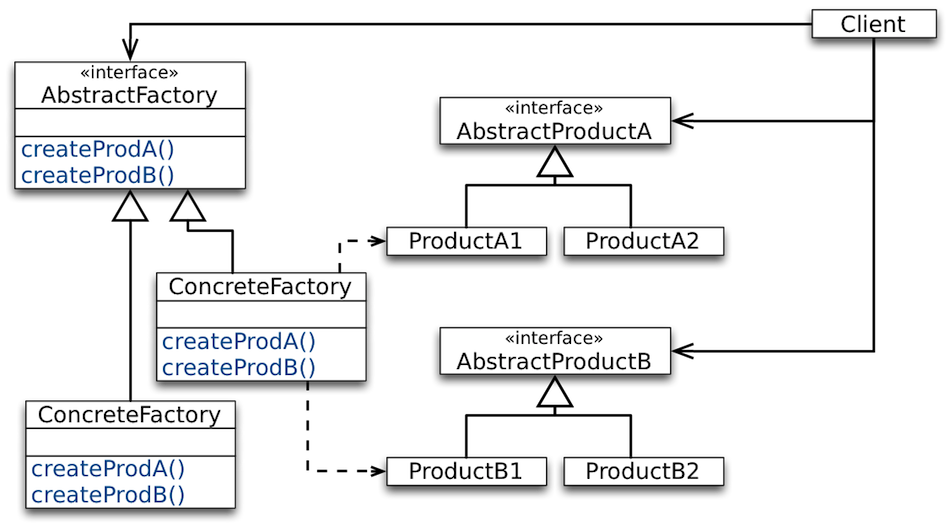
Factories for Instantiating Objects
interface MenuFactory {
MenuItem createMenuItem(String name, Action action);
CascadeMenuItem createCascadeMenuItem(String name);
…
}
The Abstract Factory design pattern enables abstraction from group variations by late-bound instantiation of the classes of the group’s objects.
Factories for Instantiating Objects
class FileMenuContrib implements MenuContributor {
void contribute(
Menu menu,
MenuFactory factory // <= we need a reference to the factory
) {
MenuItem openWith =
factory.createCascadeMenuItem(”Open With”);
menu.addItem(openWith);
MenuItem openWithTE = factory.createMenuItem(...);
openWith.addItem(openWithTE);
…
MenuItem readOnly = factory.createCheckMenuItem(...);
menu.addItem(readOnly)
…
}
…
}
The code of FileMenuContrib can be reused with different variations of menu functionality, by using it with different factory implementations.
Factories for Instantiating Objects
class BaseMenuFactory implements MenuFactory {
MenuItem createMenuItem(String name, Action action) {
return new MenuItem(name, action);
}
CascadeMenuItem createCascadeMenuItem(String name) {
return new CasadeMenuItem(name);
}
…
}
class AccelMenuFactory implements MenuFactory {
MenuItemAccel createMenuItem(String name, Action action) {
return new MenuItemAccel(name, action);
}
CascadeMenuItemAccel createCascadeMenuItem(String name) {
return new CasadeMenuItemAccel(name);
}
…
}
Deficiencies Of The Factory Pattern
Several studies have shown that the comprehensibility of some code/framework significantly decreases, when it is no longer possible to directly instantiate objects.
Combining Composite & Individual Variations
Combining Composite & Individual Variations
Problem: How to combine variations of individual classes with those of features of a class composite.
Feature variations at the level of object composites (e.g., accelerator key support).
Variations of individual elements of the composite (e.g., variations of menus and items).
Menu Items with Accelerator Keys
class MenuItemAccel extends MenuItem {
KeyStroke accelKey;
boolean processKey(KeyStroke ks) {
if (accelKey != null && accelKey.equals(ks)) {
performAction();
return true;
}
return false;
}
void setAccelerator(KeyStroke ks) { accelKey = ks; }
void draw(Graphics g) { super.draw(g); displayAccelKey(); }
…
}
class CascadeMenuItemAccel extends ???
class CheckMenuItemAccel extends ???
class RadioMenuItemAccel extends ???
Menus with Accelerator Keys
abstract class MenuAccel extends Menu {
boolean processKey(KeyStroke ks) {
for (int i = 0; i < itemCount(); i++) {
if (((MenuItemAccel) itemAt(i)).processKey(ks)) return true;
}
return false;
}
void addAction(String label, Action action) {
items.add(new MenuItemAccel(label, action));
}
…
}
class PopupMenuAccel extends ???
class MenuBarAccel extends ???
In languages with single inheritance, such as Java, combining composite & individual variations is non-trivial and leads to code duplication.
The Problem in a Nutshell
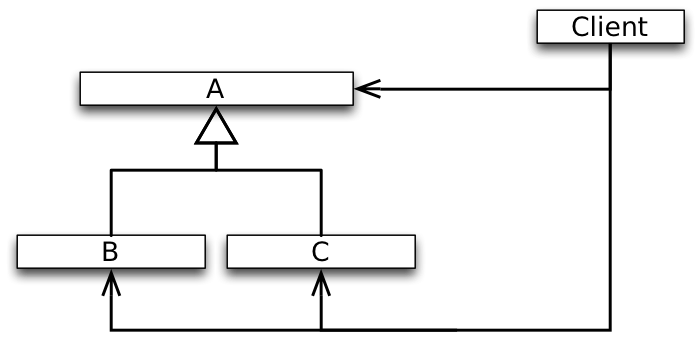
- We need to extend
A (and parallel to it also its subclasses B and C) with an optional feature (should not necessarily be visible to existing clients).
- This excludes the option of modifying
A in-place, which would be bad anyway because of OCP.
Alternative Designs
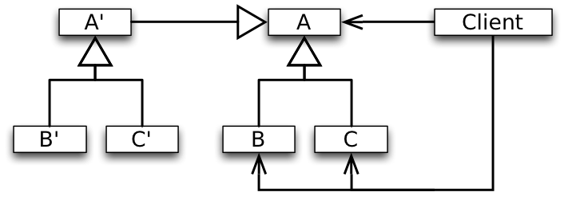
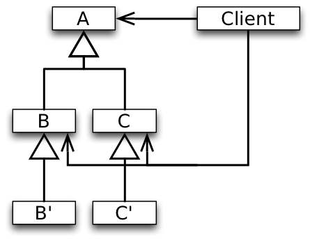
There are two possibilities ( (I) creating a parallel hierarchy or (II) creating additional subclasses of B and C) to add an optional feature to A incrementally without affecting clients in a single inheritance setting.
In both cases, code needs to be duplicated which leads to a maintenance problem.
Combining Composite and Individual Variations
Using some form of multiple inheritance
class PopupMenuAccel extends PopupMenu, MenuAccel { }
class MenuBarAccel extends MenuBar, MenuAccel { }
class CascadeMenuItemAccel extends CascadeMenuItem, MenuItemAccel {
boolean processKey(KeyStroke ks) {
if (((PopupMenuAccel) menu).processKey(ks) ) return true;
return super.processKey(ks);
}
}
class CheckMenuItemAccel extends CheckMenuItem, MenuItemAccel { ... }
class RadioMenuItemAccel extends RadioMenuItem, MenuItemAccel { ... }
The design with multiple inheritance has its problems.
It requires additional class declarations that explicitly combine the extended element class representing the composite variation with sub-classes that describe its individual variations.
- Such a design produces an excessive number of classes.
- The design is also not stable with respect to extensions with new element types.
- The developer must not forget to extend the existing variations of the composite with combinations for the new element types.
Summary
Summary
General agreement in the early days of OO:
Classes are the primary unit of organization.
- Standard inheritance operates on isolated classes.
- Variations of a group of classes can be expressed by applying inheritance to each class from the group separately.
Over the years, it turned out that sets of collaborating classes are also units of organization. In general, extensions will generally affect a set of related classes.
(Single-) Inheritance does not appropriately support OCP with respect to changes that affect a set of related classes!Almost all features that proved useful for single classes are not available for sets of related classes.
Mainstream OO languages have only insufficient means for organizing collaborating classes: packages, name spaces, etc. These structures have serious problems:
- No means to express variants of a collaboration.
- No polymorphism.
- No runtime semantics.
Desired Features
Incremental programming at the level of sets of related classes.
In analogy to incremental programming at the level of individual classes enabled by inheritance. (I.e., we want to be able to model the accelerator key feature by the difference to the default menu functionality.)
Polymorphism at the level of sets of related classes → Family polymorphism.
In analogy to subtype polymorphism at the level of individual classes.
(I.e., we want to be able to define behavior that is polymorphic with respect to the particular object group variation.)
"Family Polymorphism"
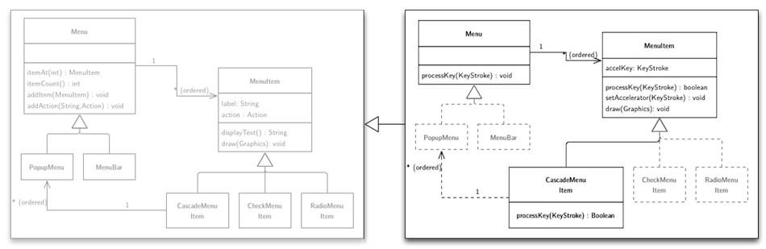
We want to avoid:
- code duplication
- casts
- the necessity to re-implement methods (e.g.
addAction)
Ideally would like to have several versions of class definitions - one per responsibility - which can be mixed and matched on-demand.
Recall the SmartHome example.
The question may arise whether this is this a real problem or not. As we will see in the following it is a very real problem which even shows up in mature deployed software.
Case Study: Java AWT and Swing
Some of the material used in the following originally appeared in the paper: Bergel et al, Controlling the Scope of Change in Java, International Conference on Object-Oriented Programming Systems Languages and Applications 2005
AWT is a GUI framework that was included in the first Java release and which directly interfaces the underlying operating system. Therefore, only a small number of widgets are supported to make code easier to port.
Swing extends AWT core classes (by subclassing) with functionality such as: "pluggable look and feel" and "double buffering". The Swing-specific support for double buffering to provide smooth flicker-free animation is implemented, among others, in the methods update(), setLayout(), etc.. Furthermore, Swing adds more widgets.
The Design of AWT and Swing
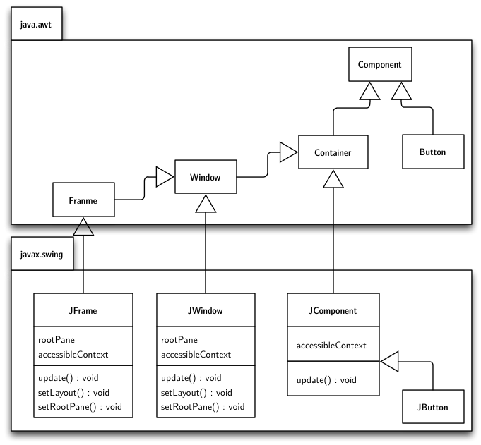
A small subset of the core of AWT (Component, Container, Frame, Window) and Swing.
Issues:
- Features defined in
JWindow are duplicated in JFrame. Due to the absence of an inheritance link between JFrame and JWindow (JWindow: 551 LOC; JFrame: 829 LOC, 241 lines of code are duplicated; 43% of JWindow reappears as 29% of JFrame.
- While a
Window is a Component in AWT, a JWindow is not a JComponent in Swing.
- While a
Button is a Component and JButton is a JComponent, a JButton is not a Button!
- A Swing
Component is a Container for other components.
Feature inherited from Container (JComponent extends Container).
- Types of subcomponents in
Container are Component not JComponent.
- Ubiquitous runtime type checks and type casts are the result!
AWT Code
public class Container extends Component {
int ncomponents;
Component components[] = new Component[0];
public Component add (Component comp) {
addImpl(comp, null, -1);
return comp;
}
protected void addImpl(Component comp, Object o, int ind) {
…
component[ncomponents++] = comp;
…
}
public Component getComponent(int index) {
return component[index];
}
}
Swing Code
public class JComponent extends Container {
public void paintChildren (Graphics g) {
…
for (; i > = 0 ; i--) {
Component comp = getComponent (i);
isJComponent = (comp instanceof JComponent); // type check
…
((JComponent)comp).getBounds(); // type cast
…
}
}
}
About the Development of Swing
“In the absence of a large existing base of clients of AWT, Swing might have been designed differently, with AWT being refactored and redesigned along the way.
Such a refactoring, however, was not an option and we can witness various anomalies in Swing, such as duplicated code, sub-optimal inheritance relationships, and excessive use of run-time type discrimination and downcasts.”
Takeaway
Outlook
Virtual Classes in Scala
(Work in Progress)
@virtualContext class Building {
@virtual abstract class Location { }
@virtual abstract class CompositeLocation extends Location {
type T <: Location
var locations: List[T] = List()
}
@virtual class Room extends Location { }
@virtual class Floor extends CompositeLocation {
type T = Room
}
@virtual class Building extends CompositeLocation {
type T = Floor
}
}
Virtual Classes in Scala
(Work in Progress)
class Light { def turnOn() { ... }; def turnOff() { ... }; }
@virtualContext class Lights extends Building {
@virtual abstract class Location {
var _lights: List[Light] = List()
def lights: List[Light] = _lights
def turnLightsOn = lights.foreach(_.turnOn())
def turnLightsOff = lights.foreach(_.turnOff())
}
@virtual abstract class CompositeLocation {
override def lights: List[Light] =
_lights ++ locations.flatMap(location => location.lights)
}
}
Virtual Classes in Scala
(Work in Progress)
class Shutter { def raise() { ... }; def lower() { ... }; }
@virtualContext class Shutters extends Building {
@virtual abstract class Location {
var _shutters: List[Shutter] = List()
def shutters: List[Shutter] = _shutters
def lower = shutters.foreach(_.lower)
def raise = shutters.foreach(_.raise)
}
@virtual abstract class CompositeLocation {
override def shutters: List[Shutter] = _shutters ++ locations.flatMap(location => location.shutters)
}
}
Virtual Classes in Scala
(Work in Progress)
@virtualContext class LightsAndShutters extends Lights with Shutters { }
@virtualContext class Estate extends Building with Lights with Shutters {
@virtual class Garage extends Location {
def Car = "Audi R8"
}
}